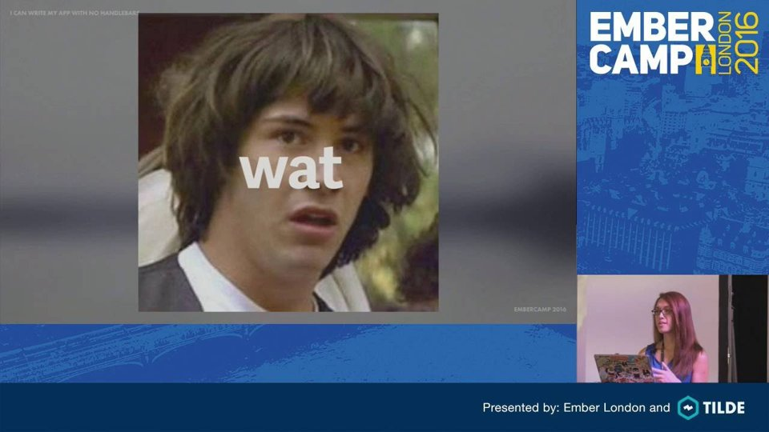

2016 · EmberCamp London
Handlebars なしでもアプリは書ける
I Can Write My App with No Handlebars

見どころと解説
複数のテンプレートで同じ並べ替えや絞り込みが必要になったら、処理はどこに置くのがよいだろう。Lauren は一つのリストの表し方を比較し、repeat や toggle といった小さなヘルパーを作る。次にテンプレートを読む人の立場で呼び出しを見ると、名前からは操作が、引数からは対象のデータが分かる。画面の意図をテンプレートから読み取れるうえ、ヘルパーの実装は独立してテストできる。